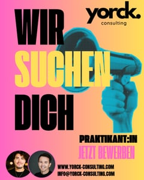

Karriere
Aktuell offene Stellen bei Yorck Consulting

Praktikum bei Yorck (m/w/d)
Stelle ansehenInitiativbewerbung
Keine passende Stelle dabei? Schick uns deinen Lebenslauf und ein paar Zeilen zu dir an info@yorck-consulting.com.
Aktuell offene Stellen bei Yorck Consulting

Keine passende Stelle dabei? Schick uns deinen Lebenslauf und ein paar Zeilen zu dir an info@yorck-consulting.com.